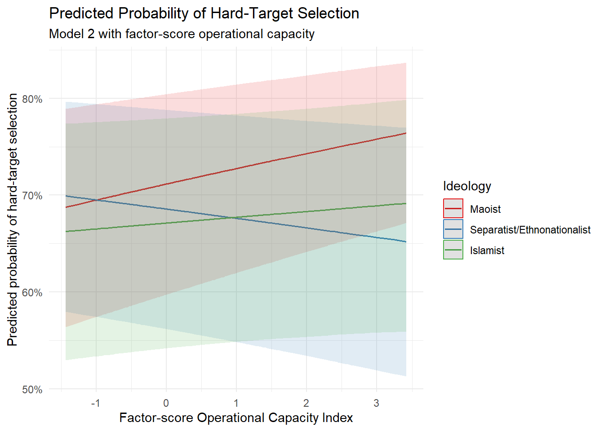

# ============================================================
# PART 2: MODEL 2 WITH FACTOR-SCORE OCI
# ============================================================
# Install packages once in the R Console if necessary:
# install.packages(c(
# "readxl",
# "dplyr",
# "psych",
# "lme4",
# "emmeans",
# "ggeffects",
# "ggplot2"
# ))
library(readxl)
library(dplyr)
library(psych)
library(lme4)
library(emmeans)
library(ggeffects)
library(ggplot2)
# ============================================================
# 1. Import the data
# ============================================================
file_path <- paste0(
"D:/PhD in Political Science-UTD/Fall 2026/",
"Methods of Data Collection and Production/",
"avinash13808138.github.io/",
"GTD-India_Avinash_with_Districts_and_OCI_",
"MatchedData_with_Controls_Final 2(2).xlsx"
)
if (!file.exists(file_path)) {
stop(
paste(
"The Excel file was not found at:",
file_path
)
)
}
gtd_data <- readxl::read_excel(
path = file_path,
sheet = "Sheet1"
)
cat(
"Original dataset:",
nrow(gtd_data),
"rows and",
ncol(gtd_data),
"columns\n"
)Original dataset: 13929 rows and 159 columns# Expected:
# 13,929 rows
# 159 columns
# ============================================================
# 2. Reproduce the Model 2 analytical sample
# ============================================================
model2_incidents <- gtd_data %>%
filter(
ideology_code %in% c(1, 2, 3),
!is.na(OCI),
!is.na(lagged_district_terrorism_intensity),
!is.na(`Target Category`),
!is.na(conflict_region),
!is.na(gname),
!is.na(iyear)
)
cat(
"Model 2 incidents:",
nrow(model2_incidents),
"\n"
)Model 2 incidents: 7631 cat(
"Organizations:",
n_distinct(model2_incidents$gname),
"\n"
)Organizations: 115 # Expected:
# Model 2 incidents: 7631
# Organizations: 115
# ============================================================
# 3. Create one row per organization-year
# ============================================================
oci_group_year <- model2_incidents %>%
distinct(
gname,
iyear,
.keep_all = TRUE
)
cat(
"Organization-years:",
nrow(oci_group_year),
"\n"
)Organization-years: 572 # Expected:
# 572 organization-years
# ============================================================
# 4. Verify that the four components do not vary within
# organization-years
# ============================================================
component_names <- c(
"z_prior_attacks",
"z_tactical_diversity",
"z_geo_spread",
"z_success_rate"
)
component_consistency <- model2_incidents %>%
group_by(
gname,
iyear
) %>%
summarise(
across(
all_of(component_names),
~ n_distinct(.x)
),
.groups = "drop"
) %>%
filter(
if_any(
all_of(component_names),
~ .x > 1
)
)
if (nrow(component_consistency) > 0) {
stop(
paste(
"At least one OCI component varies",
"within an organization-year."
)
)
} else {
cat(
"All OCI components are constant",
"within organization-years.\n"
)
}All OCI components are constant within organization-years.# ============================================================
# 5. Select the standardized three-year OCI components
# ============================================================
oci_components <- oci_group_year %>%
select(
z_prior_attacks,
z_tactical_diversity,
z_geo_spread,
z_success_rate
)
if (anyNA(oci_components)) {
stop(
"Missing values exist in the OCI components."
)
}
cat(
"Organization-years used to generate factor scores:",
nrow(oci_components),
"\n"
)Organization-years used to generate factor scores: 572 # These are the standardized versions of:
# prior_attacks_3yr
# tactical_diversity_3yr
# geo_spread_3yr
# success_rate_adj_3yr
# ============================================================
# 6. Estimate the one-factor model
# ============================================================
set.seed(12345)
factor_model <- psych::fa(
oci_components,
nfactors = 1,
fm = "minres",
rotate = "none",
scores = "regression"
)
print(
factor_model,
digits = 3,
cutoff = 0.20,
sort = FALSE
)Factor Analysis using method = minres
Call: psych::fa(r = oci_components, nfactors = 1, rotate = "none",
scores = "regression", fm = "minres")
Standardized loadings (pattern matrix) based upon correlation matrix
MR1 h2 u2 com
z_prior_attacks 0.958 0.918 0.0821 1
z_tactical_diversity 0.771 0.595 0.4048 1
z_geo_spread 0.945 0.893 0.1071 1
z_success_rate 0.627 0.393 0.6073 1
MR1
SS loadings 2.799
Proportion Var 0.700
Mean item complexity = 1
Test of the hypothesis that 1 factor is sufficient.
df null model = 6 with the objective function = 3.241 0.2 with Chi Square = 1843.688
df of the model are 2 and the objective function was 0.074
0.2
The root mean square of the residuals (RMSR) is 0.027
The df corrected root mean square of the residuals is 0.047
0.2
The harmonic n.obs is 572 with the empirical chi square 2.474 with prob < 0.29
0.2The total n.obs was 572 with Likelihood Chi Square = 41.933 with prob < 7.84e-10
0.2
Tucker Lewis Index of factoring reliability = 0.9347
RMSEA index = 0.1868 and the 90 % confidence intervals are 0.1403 0.2382 0.2
BIC = 29.235
Fit based upon off diagonal values = 0.998
Measures of factor score adequacy
MR1
Correlation of (regression) scores with factors 0.978
Multiple R square of scores with factors 0.956
Minimum correlation of possible factor scores 0.912if (is.null(factor_model$scores)) {
stop(
"The factor-analysis procedure did not generate factor scores."
)
}
# ============================================================
# 7. Create the factor-score OCI
# ============================================================
oci_group_year$OCI_factor_raw <-
as.numeric(
factor_model$scores[, 1]
)
oci_group_year$OCI_factor_z <-
as.numeric(
scale(
oci_group_year$OCI_factor_raw
)
)
# ============================================================
# 8. Ensure that higher factor scores represent higher capacity
# ============================================================
factor_equal_correlation <- cor(
oci_group_year$OCI_factor_z,
oci_group_year$OCI,
use = "complete.obs"
)
if (factor_equal_correlation < 0) {
oci_group_year$OCI_factor_raw <-
-oci_group_year$OCI_factor_raw
oci_group_year$OCI_factor_z <-
-oci_group_year$OCI_factor_z
factor_equal_correlation <- cor(
oci_group_year$OCI_factor_z,
oci_group_year$OCI,
use = "complete.obs"
)
cat(
"The factor-score direction was reversed.\n"
)
}
cat(
"Correlation between factor-score OCI",
"and equal-weighted OCI:",
round(factor_equal_correlation, 3),
"\n"
)Correlation between factor-score OCI and equal-weighted OCI: 0.966 cat(
"Factor-score OCI mean:",
round(
mean(oci_group_year$OCI_factor_z),
3
),
"\n"
)Factor-score OCI mean: 0 cat(
"Factor-score OCI standard deviation:",
round(
sd(oci_group_year$OCI_factor_z),
3
),
"\n"
)Factor-score OCI standard deviation: 1 print(
summary(
oci_group_year$OCI_factor_z
)
) Min. 1st Qu. Median Mean 3rd Qu. Max.
-1.4334 -0.7497 -0.1185 0.0000 0.6553 3.4188 # ============================================================
# 9. Create the organization-year factor-score key
# ============================================================
factor_score_key <- oci_group_year %>%
select(
gname,
iyear,
OCI_factor_raw,
OCI_factor_z
)
duplicate_factor_keys <- factor_score_key %>%
count(
gname,
iyear
) %>%
filter(
n > 1
)
if (nrow(duplicate_factor_keys) > 0) {
stop(
"Duplicate organization-year factor-score keys were found."
)
}
# ============================================================
# 10. Merge factor scores into the incident-level data
# ============================================================
factor_model_data <- model2_incidents %>%
left_join(
factor_score_key,
by = c(
"gname",
"iyear"
)
)
cat(
"Incident rows after merging factor scores:",
nrow(factor_model_data),
"\n"
)Incident rows after merging factor scores: 7631 cat(
"Missing factor scores after merge:",
sum(
is.na(
factor_model_data$OCI_factor_z
)
),
"\n"
)Missing factor scores after merge: 0 if (nrow(factor_model_data) != 7631) {
stop(
paste(
"The merged factor-score dataset contains",
nrow(factor_model_data),
"rows instead of 7,631."
)
)
}
if (
sum(
is.na(
factor_model_data$OCI_factor_z
)
) > 0
) {
stop(
"At least one incident is missing a factor-score OCI."
)
}
# ============================================================
# 11. Prepare the variables for Model 2
# ============================================================
factor_model_data <- factor_model_data %>%
rename(
target_category = `Target Category`
) %>%
mutate(
# Binary dependent variable:
# 0 = soft target
# 1 = hard target
target_category =
as.integer(target_category),
# Maoist is the ideology reference category
ideology_factor = factor(
ideology_category,
levels = c(
"Maoist",
"Separatist/Ethnonationalist",
"Islamist"
)
),
# Rest of India is the conflict-region reference
conflict_region_factor = relevel(
factor(
conflict_region
),
ref = "Rest of India"
),
# Log-transform the one-year-lagged district intensity
ln_lagged_district_terrorism_intensity =
log1p(
lagged_district_terrorism_intensity
),
# Year fixed effects
year_factor =
factor(iyear),
# Organization random intercept
organization_factor =
factor(gname)
)
# ============================================================
# 12. Verify the transformed control variable
# ============================================================
cat(
"Missing logged intensity values:",
sum(
is.na(
factor_model_data$
ln_lagged_district_terrorism_intensity
)
),
"\n"
)Missing logged intensity values: 0 print(
summary(
factor_model_data$
ln_lagged_district_terrorism_intensity
)
) Min. 1st Qu. Median Mean 3rd Qu. Max.
0.000 1.099 1.946 1.970 2.944 4.754 if (
any(
!is.finite(
factor_model_data$
ln_lagged_district_terrorism_intensity
)
)
) {
stop(
paste(
"The logged district-intensity control",
"contains a non-finite value."
)
)
}
# ============================================================
# 13. Verify categories and reference groups
# ============================================================
cat(
"Ideology reference category:",
levels(
factor_model_data$ideology_factor
)[1],
"\n"
)Ideology reference category: Maoist cat(
"Conflict-region reference category:",
levels(
factor_model_data$conflict_region_factor
)[1],
"\n"
)Conflict-region reference category: Rest of India cat(
"Target-category distribution:\n"
)Target-category distribution:print(
table(
factor_model_data$target_category
)
)
0 1
4366 3265 cat(
"Ideology distribution:\n"
)Ideology distribution:print(
table(
factor_model_data$ideology_factor
)
)
Maoist Separatist/Ethnonationalist
4257 2379
Islamist
995 cat(
"Conflict-region distribution:\n"
)Conflict-region distribution:print(
table(
factor_model_data$conflict_region_factor
)
)
Rest of India Kashmir Maoist-affected belt
717 1066 4403
Northeast
1445 # ============================================================
# 14. Estimate Model 2 with factor-score OCI
# ============================================================
model2_factor_oci <- lme4::glmer(
target_category ~
ideology_factor * OCI_factor_z +
conflict_region_factor +
ln_lagged_district_terrorism_intensity +
year_factor +
(1 | organization_factor),
data = factor_model_data,
family = binomial(
link = "logit"
),
control = lme4::glmerControl(
optimizer = "bobyqa",
optCtrl = list(
maxfun = 200000
)
)
)
# ============================================================
# 15. Display the full regression results
# ============================================================
summary(
model2_factor_oci
)Generalized linear mixed model fit by maximum likelihood (Laplace
Approximation) [glmerMod]
Family: binomial ( logit )
Formula:
target_category ~ ideology_factor * OCI_factor_z + conflict_region_factor +
ln_lagged_district_terrorism_intensity + year_factor + (1 |
organization_factor)
Data: factor_model_data
Control:
lme4::glmerControl(optimizer = "bobyqa", optCtrl = list(maxfun = 2e+05))
AIC BIC logLik -2*log(L) df.resid
9704.1 10051.1 -4802.0 9604.1 7581
Scaled residuals:
Min 1Q Median 3Q Max
-3.3296 -0.8007 -0.5259 0.9997 4.2157
Random effects:
Groups Name Variance Std.Dev.
organization_factor (Intercept) 0.742 0.8614
Number of obs: 7631, groups: organization_factor, 115
Fixed effects:
Estimate Std. Error
(Intercept) 0.62068 1.26610
ideology_factorSeparatist/Ethnonationalist -0.12264 0.40101
ideology_factorIslamist -0.18899 0.42759
OCI_factor_z 0.07943 0.06475
conflict_region_factorKashmir 1.45877 0.23480
conflict_region_factorMaoist-affected belt 0.11526 0.19187
conflict_region_factorNortheast 0.13498 0.29003
ln_lagged_district_terrorism_intensity 0.14321 0.02360
year_factor1981 -12.92899 197.21099
year_factor1982 -0.78960 1.59800
year_factor1983 -1.73607 1.44047
year_factor1984 -1.75882 1.29667
year_factor1985 -0.58288 1.36985
year_factor1986 -1.53158 1.29612
year_factor1987 -1.17420 1.26668
year_factor1988 -1.93689 1.26319
year_factor1989 -1.44461 1.25969
year_factor1990 -1.37756 1.25242
year_factor1991 -0.82185 1.24842
year_factor1992 -1.24755 1.25299
year_factor1994 -0.70497 1.27480
year_factor1995 -2.15985 1.26522
year_factor1996 -0.23723 1.27179
year_factor1997 -1.26765 1.27419
year_factor1998 -1.74080 1.36299
year_factor1999 -0.15578 1.28869
year_factor2000 -1.40151 1.25695
year_factor2001 -1.39872 1.25611
year_factor2002 -1.96977 1.26513
year_factor2003 -1.71038 1.25482
year_factor2004 -1.75038 1.27540
year_factor2005 -2.15359 1.26780
year_factor2006 -1.68814 1.24730
year_factor2007 -1.57654 1.25560
year_factor2008 -1.94908 1.23154
year_factor2009 -1.44974 1.23117
year_factor2010 -2.00623 1.23544
year_factor2011 -2.01104 1.23643
year_factor2012 -1.35296 1.23013
year_factor2013 -1.38453 1.23281
year_factor2014 -1.45583 1.23231
year_factor2015 -1.86976 1.23257
year_factor2016 -1.97528 1.23329
year_factor2017 -2.15796 1.23420
year_factor2018 -2.04461 1.23453
year_factor2019 -2.24846 1.23614
year_factor2020 -2.02086 1.23710
ideology_factorSeparatist/Ethnonationalist:OCI_factor_z -0.12374 0.10866
ideology_factorIslamist:OCI_factor_z -0.05211 0.14219
z value Pr(>|z|)
(Intercept) 0.490 0.6240
ideology_factorSeparatist/Ethnonationalist -0.306 0.7597
ideology_factorIslamist -0.442 0.6585
OCI_factor_z 1.227 0.2199
conflict_region_factorKashmir 6.213 5.2e-10 ***
conflict_region_factorMaoist-affected belt 0.601 0.5480
conflict_region_factorNortheast 0.465 0.6417
ln_lagged_district_terrorism_intensity 6.067 1.3e-09 ***
year_factor1981 -0.066 0.9477
year_factor1982 -0.494 0.6212
year_factor1983 -1.205 0.2281
year_factor1984 -1.356 0.1750
year_factor1985 -0.426 0.6705
year_factor1986 -1.182 0.2373
year_factor1987 -0.927 0.3539
year_factor1988 -1.533 0.1252
year_factor1989 -1.147 0.2515
year_factor1990 -1.100 0.2714
year_factor1991 -0.658 0.5103
year_factor1992 -0.996 0.3194
year_factor1994 -0.553 0.5803
year_factor1995 -1.707 0.0878 .
year_factor1996 -0.187 0.8520
year_factor1997 -0.995 0.3198
year_factor1998 -1.277 0.2015
year_factor1999 -0.121 0.9038
year_factor2000 -1.115 0.2648
year_factor2001 -1.114 0.2655
year_factor2002 -1.557 0.1195
year_factor2003 -1.363 0.1729
year_factor2004 -1.372 0.1699
year_factor2005 -1.699 0.0894 .
year_factor2006 -1.353 0.1759
year_factor2007 -1.256 0.2093
year_factor2008 -1.583 0.1135
year_factor2009 -1.178 0.2390
year_factor2010 -1.624 0.1044
year_factor2011 -1.626 0.1038
year_factor2012 -1.100 0.2714
year_factor2013 -1.123 0.2614
year_factor2014 -1.181 0.2375
year_factor2015 -1.517 0.1293
year_factor2016 -1.602 0.1092
year_factor2017 -1.748 0.0804 .
year_factor2018 -1.656 0.0977 .
year_factor2019 -1.819 0.0689 .
year_factor2020 -1.634 0.1024
ideology_factorSeparatist/Ethnonationalist:OCI_factor_z -1.139 0.2548
ideology_factorIslamist:OCI_factor_z -0.366 0.7140
---
Signif. codes: 0 '***' 0.001 '**' 0.01 '*' 0.05 '.' 0.1 ' ' 1# ============================================================
# 16. Check convergence and singularity
# ============================================================
cat(
"Convergence message:\n"
)Convergence message:print(
model2_factor_oci@
optinfo$conv$lme4$messages
)NULLcat(
"Is the model singular?",
lme4::isSingular(
model2_factor_oci,
tol = 1e-4
),
"\n"
)Is the model singular? FALSE # Desired:
# Convergence message: NULL
# Is the model singular? FALSE
# ============================================================
# 17. Create the coefficient-results table
# ============================================================
coefficient_matrix <- coef(
summary(
model2_factor_oci
)
)
factor_results <- data.frame(
term = rownames(
coefficient_matrix
),
estimate =
coefficient_matrix[
,
"Estimate"
],
standard_error =
coefficient_matrix[
,
"Std. Error"
],
z_value =
coefficient_matrix[
,
"z value"
],
p_value =
coefficient_matrix[
,
"Pr(>|z|)"
],
row.names = NULL
) %>%
mutate(
coefficient_ci_low =
estimate -
1.96 * standard_error,
coefficient_ci_high =
estimate +
1.96 * standard_error,
odds_ratio =
exp(estimate),
odds_ratio_ci_low =
exp(
coefficient_ci_low
),
odds_ratio_ci_high =
exp(
coefficient_ci_high
)
)
print(
factor_results
) term estimate
1 (Intercept) 0.62067778
2 ideology_factorSeparatist/Ethnonationalist -0.12263649
3 ideology_factorIslamist -0.18899409
4 OCI_factor_z 0.07943189
5 conflict_region_factorKashmir 1.45876731
6 conflict_region_factorMaoist-affected belt 0.11525760
7 conflict_region_factorNortheast 0.13497629
8 ln_lagged_district_terrorism_intensity 0.14320848
9 year_factor1981 -12.92898808
10 year_factor1982 -0.78959829
11 year_factor1983 -1.73607392
12 year_factor1984 -1.75882142
13 year_factor1985 -0.58287802
14 year_factor1986 -1.53157778
15 year_factor1987 -1.17420400
16 year_factor1988 -1.93689048
17 year_factor1989 -1.44460513
18 year_factor1990 -1.37755588
19 year_factor1991 -0.82185305
20 year_factor1992 -1.24754672
21 year_factor1994 -0.70497182
22 year_factor1995 -2.15985016
23 year_factor1996 -0.23722823
24 year_factor1997 -1.26764826
25 year_factor1998 -1.74079584
26 year_factor1999 -0.15577547
27 year_factor2000 -1.40150951
28 year_factor2001 -1.39871586
29 year_factor2002 -1.96977153
30 year_factor2003 -1.71038496
31 year_factor2004 -1.75037530
32 year_factor2005 -2.15358892
33 year_factor2006 -1.68813573
34 year_factor2007 -1.57654332
35 year_factor2008 -1.94908103
36 year_factor2009 -1.44974463
37 year_factor2010 -2.00622996
38 year_factor2011 -2.01104389
39 year_factor2012 -1.35295946
40 year_factor2013 -1.38453401
41 year_factor2014 -1.45582549
42 year_factor2015 -1.86976055
43 year_factor2016 -1.97527962
44 year_factor2017 -2.15796342
45 year_factor2018 -2.04460982
46 year_factor2019 -2.24846069
47 year_factor2020 -2.02085858
48 ideology_factorSeparatist/Ethnonationalist:OCI_factor_z -0.12374231
49 ideology_factorIslamist:OCI_factor_z -0.05210535
standard_error z_value p_value coefficient_ci_low
1 1.26610133 0.49022758 6.239729e-01 -1.86088081
2 0.40100516 -0.30582271 7.597396e-01 -0.90860660
3 0.42759007 -0.44199831 6.584904e-01 -1.02707062
4 0.06475094 1.22672955 2.199243e-01 -0.04747995
5 0.23479592 6.21291579 5.201033e-10 0.99856729
6 0.19187073 0.60070446 5.480368e-01 -0.26080902
7 0.29002832 0.46539005 6.416522e-01 -0.43347922
8 0.02360427 6.06705855 1.302741e-09 0.09694411
9 197.21098562 -0.06555917 9.477288e-01 -399.46251990
10 1.59799734 -0.49411740 6.212233e-01 -3.92167308
11 1.44047084 -1.20521282 2.281212e-01 -4.55939676
12 1.29667454 -1.35640931 1.749690e-01 -4.30030352
13 1.36984702 -0.42550592 6.704679e-01 -3.26777819
14 1.29612315 -1.18166069 2.373404e-01 -4.07197915
15 1.26668389 -0.92699055 3.539314e-01 -3.65690443
16 1.26319475 -1.53332689 1.251953e-01 -4.41275219
17 1.25968702 -1.14679687 2.514656e-01 -3.91359170
18 1.25241783 -1.09991717 2.713682e-01 -3.83229484
19 1.24841623 -0.65831654 5.103348e-01 -3.26874887
20 1.25299240 -0.99565386 3.194184e-01 -3.70341182
21 1.27479818 -0.55300661 5.802589e-01 -3.20357626
22 1.26521891 -1.70709602 8.780421e-02 -4.63967922
23 1.27179179 -0.18653072 8.520286e-01 -2.72994014
24 1.27418529 -0.99486964 3.197997e-01 -3.76505142
25 1.36298615 -1.27719261 2.015343e-01 -4.41224869
26 1.28868807 -0.12087911 9.037868e-01 -2.68160408
27 1.25694551 -1.11501215 2.648452e-01 -3.86512270
28 1.25611028 -1.11352950 2.654811e-01 -3.86069201
29 1.26512726 -1.55697501 1.194764e-01 -4.44942096
30 1.25482109 -1.36305085 1.728665e-01 -4.16983430
31 1.27539549 -1.37241767 1.699335e-01 -4.25015047
32 1.26780178 -1.69867951 8.937959e-02 -4.63848041
33 1.24729703 -1.35343522 1.759166e-01 -4.13283790
34 1.25559519 -1.25561434 2.092558e-01 -4.03750990
35 1.23154038 -1.58263672 1.135043e-01 -4.36290017
36 1.23117198 -1.17753218 2.389832e-01 -3.86284172
37 1.23544001 -1.62389914 1.043973e-01 -4.42769238
38 1.23642944 -1.62649305 1.038448e-01 -4.43444558
39 1.23013088 -1.09985001 2.713975e-01 -3.76401598
40 1.23280851 -1.12307305 2.614065e-01 -3.80083868
41 1.23231215 -1.18137722 2.374529e-01 -3.87115730
42 1.23257105 -1.51695965 1.292769e-01 -4.28559979
43 1.23328718 -1.60163801 1.092357e-01 -4.39252249
44 1.23420186 -1.74846878 8.038289e-02 -4.57699906
45 1.23453380 -1.65617970 9.768543e-02 -4.46429607
46 1.23613593 -1.81894291 6.892014e-02 -4.67128712
47 1.23709605 -1.63355026 1.023533e-01 -4.44556684
48 0.10866476 -1.13875295 2.548062e-01 -0.33672523
49 0.14218599 -0.36645912 7.140225e-01 -0.33078989
coefficient_ci_high odds_ratio odds_ratio_ci_low odds_ratio_ci_high
1 3.10223638 1.860188e+00 1.555356e-01 2.224765e+01
2 0.66333363 8.845852e-01 4.030855e-01 1.941253e+00
3 0.64908244 8.277914e-01 3.580543e-01 1.913784e+00
4 0.20634372 1.082672e+00 9.536296e-01 1.229176e+00
5 1.91896732 4.300655e+00 2.714390e+00 6.813918e+00
6 0.49132423 1.122162e+00 7.704280e-01 1.634479e+00
7 0.70343181 1.144510e+00 6.482498e-01 2.020675e+00
8 0.18947284 1.153970e+00 1.101799e+00 1.208612e+00
9 373.60454374 2.426676e-06 3.278173e-174 1.796353e+162
10 2.34247650 4.540271e-01 1.980793e-02 1.040698e+01
11 1.08724892 1.762109e-01 1.046837e-02 2.966103e+00
12 0.78266069 1.722478e-01 1.356444e-02 2.187284e+00
13 2.10202214 5.582893e-01 3.809096e-02 8.182700e+00
14 1.00882359 2.161943e-01 1.704362e-02 2.742373e+00
15 1.30849643 3.090649e-01 2.581229e-02 3.700605e+00
16 0.53897123 1.441515e-01 1.212177e-02 1.714242e+00
17 1.02438143 2.358392e-01 1.996865e-02 2.785372e+00
18 1.07718307 2.521942e-01 2.165985e-02 2.936396e+00
19 1.62504276 4.396163e-01 3.805401e-02 5.078636e+00
20 1.20831838 2.872085e-01 2.463932e-02 3.347850e+00
21 1.79363262 4.941225e-01 4.061669e-02 6.011249e+00
22 0.31997890 1.153424e-01 9.660796e-03 1.377099e+00
23 2.25548367 7.888112e-01 6.522319e-02 9.539906e+00
24 1.22975491 2.814928e-01 2.316642e-02 3.420391e+00
25 0.93065702 1.753808e-01 1.212788e-02 2.536175e+00
26 2.37005315 8.557513e-01 6.845326e-02 1.069796e+01
27 1.06210368 2.462250e-01 2.096035e-02 2.892449e+00
28 1.06326029 2.469138e-01 2.105343e-02 2.895797e+00
29 0.50987790 1.394887e-01 1.168533e-02 1.665088e+00
30 0.74906438 1.807962e-01 1.545482e-02 2.115020e+00
31 0.74939986 1.737087e-01 1.426209e-02 2.115730e+00
32 0.33130258 1.160669e-01 9.672385e-03 1.392781e+00
33 0.75656644 1.848638e-01 1.603730e-02 2.130947e+00
34 0.88442325 2.066883e-01 1.764135e-02 2.421587e+00
35 0.46473811 1.424049e-01 1.274138e-02 1.591597e+00
36 0.96335245 2.346302e-01 2.100822e-02 2.620467e+00
37 0.41523245 1.344948e-01 1.194202e-02 1.514723e+00
38 0.41235781 1.338489e-01 1.186164e-02 1.510375e+00
39 1.05809707 2.584742e-01 2.319042e-02 2.880884e+00
40 1.03177067 2.504405e-01 2.235202e-02 2.806030e+00
41 0.95950631 2.332078e-01 2.083424e-02 2.610407e+00
42 0.54607870 1.541606e-01 1.376536e-02 1.726470e+00
43 0.44196324 1.387225e-01 1.236949e-02 1.555759e+00
44 0.26107222 1.155602e-01 1.028572e-02 1.298321e+00
45 0.37507644 1.294307e-01 1.151280e-02 1.455103e+00
46 0.17436573 1.055616e-01 9.360214e-03 1.190491e+00
47 0.40384968 1.325416e-01 1.173045e-02 1.497579e+00
48 0.08924061 8.836075e-01 7.141050e-01 1.093344e+00
49 0.22657918 9.492289e-01 7.183561e-01 1.254302e+00# ============================================================
# 18. Report model fit and sample size
# ============================================================
factor_model_fit <- data.frame(
model =
"Model 2 with factor-score OCI",
AIC =
AIC(
model2_factor_oci
),
BIC =
BIC(
model2_factor_oci
),
log_likelihood =
as.numeric(
logLik(
model2_factor_oci
)
),
deviance =
deviance(
model2_factor_oci
),
incidents =
nobs(
model2_factor_oci
),
organizations =
n_distinct(
factor_model_data$gname
)
)
print(
factor_model_fit
) model AIC BIC log_likelihood deviance
1 Model 2 with factor-score OCI 9704.082 10051.08 -4802.041 9422.838
incidents organizations
1 7631 115# ============================================================
# 19. Calculate random-intercept variance and ICC
# ============================================================
random_effects_table <- as.data.frame(
VarCorr(
model2_factor_oci
)
)
random_variance <-
random_effects_table$vcov[1]
random_standard_deviation <-
sqrt(
random_variance
)
factor_icc <-
random_variance /
(
random_variance +
(pi^2 / 3)
)
cat(
"Organization random-intercept variance:",
round(
random_variance,
3
),
"\n"
)Organization random-intercept variance: 0.742 cat(
"Organization random-intercept SD:",
round(
random_standard_deviation,
3
),
"\n"
)Organization random-intercept SD: 0.861 cat(
"ICC:",
round(
factor_icc,
3
),
"\n"
)ICC: 0.184 # ============================================================
# 20. Calculate factor-score OCI slopes by ideology
# ============================================================
factor_oci_slopes <- emmeans::emtrends(
model2_factor_oci,
specs = ~ ideology_factor,
var = "OCI_factor_z"
)
cat(
"Factor-score OCI slopes by ideology:\n"
)Factor-score OCI slopes by ideology:print(
factor_oci_slopes
) ideology_factor OCI_factor_z.trend SE df asymp.LCL asymp.UCL
Maoist 0.0794 0.0648 Inf -0.0475 0.206
Separatist/Ethnonationalist -0.0443 0.0925 Inf -0.2257 0.137
Islamist 0.0273 0.1320 Inf -0.2310 0.286
Results are averaged over the levels of: conflict_region_factor, year_factor
Confidence level used: 0.95 cat(
"Confidence intervals for factor-score OCI slopes:\n"
)Confidence intervals for factor-score OCI slopes:print(
confint(
factor_oci_slopes
)
) ideology_factor OCI_factor_z.trend SE df asymp.LCL asymp.UCL
Maoist 0.0794 0.0648 Inf -0.0475 0.206
Separatist/Ethnonationalist -0.0443 0.0925 Inf -0.2257 0.137
Islamist 0.0273 0.1320 Inf -0.2310 0.286
Results are averaged over the levels of: conflict_region_factor, year_factor
Confidence level used: 0.95 # ============================================================
# 21. Compare slopes between ideological groups
# ============================================================
factor_slope_comparisons <- pairs(
factor_oci_slopes
)
cat(
"Pairwise comparisons of factor-score OCI slopes:\n"
)Pairwise comparisons of factor-score OCI slopes:print(
factor_slope_comparisons
) contrast estimate SE df z.ratio p.value
Maoist - (Separatist/Ethnonationalist) 0.1237 0.109 Inf 1.139 0.4902
Maoist - Islamist 0.0521 0.142 Inf 0.366 0.9287
(Separatist/Ethnonationalist) - Islamist -0.0716 0.161 Inf -0.444 0.8968
Results are averaged over the levels of: conflict_region_factor, year_factor
P value adjustment: tukey method for comparing a family of 3 estimates cat(
"Confidence intervals for slope comparisons:\n"
)Confidence intervals for slope comparisons:print(
confint(
factor_slope_comparisons
)
) contrast estimate SE df asymp.LCL
Maoist - (Separatist/Ethnonationalist) 0.1237 0.109 Inf -0.131
Maoist - Islamist 0.0521 0.142 Inf -0.281
(Separatist/Ethnonationalist) - Islamist -0.0716 0.161 Inf -0.449
asymp.UCL
0.378
0.385
0.306
Results are averaged over the levels of: conflict_region_factor, year_factor
Confidence level used: 0.95
Conf-level adjustment: tukey method for comparing a family of 3 estimates # ============================================================
# 22. Generate adjusted predicted probabilities
# ============================================================
factor_predictions <- ggeffects::ggpredict(
model2_factor_oci,
terms = c(
"OCI_factor_z [all]",
"ideology_factor"
),
type = "fixed"
)
print(
factor_predictions
)# Predicted probabilities of target_category
ideology_factor: Maoist
OCI_factor_z | Predicted | 95% CI
-------------------------------------
-1.43 | 0.69 | 0.56, 0.79
-0.32 | 0.71 | 0.59, 0.80
0.04 | 0.71 | 0.60, 0.80
0.39 | 0.72 | 0.61, 0.81
0.77 | 0.72 | 0.61, 0.81
3.42 | 0.76 | 0.67, 0.84
ideology_factor: Separatist/Ethnonationalist
OCI_factor_z | Predicted | 95% CI
-------------------------------------
-1.43 | 0.70 | 0.58, 0.80
-0.32 | 0.69 | 0.57, 0.79
0.04 | 0.69 | 0.56, 0.79
0.39 | 0.68 | 0.56, 0.79
0.77 | 0.68 | 0.55, 0.78
3.42 | 0.65 | 0.51, 0.77
ideology_factor: Islamist
OCI_factor_z | Predicted | 95% CI
-------------------------------------
-1.43 | 0.66 | 0.53, 0.77
-0.32 | 0.67 | 0.54, 0.78
0.04 | 0.67 | 0.54, 0.78
0.39 | 0.67 | 0.54, 0.78
0.77 | 0.68 | 0.55, 0.78
3.42 | 0.69 | 0.56, 0.80
Adjusted for:
* conflict_region_factor = Rest of India
* ln_lagged_district_terrorism_intensity = 1.97
* year_factor = 1980
* organization_factor = 0 (population-level)# ============================================================
# 23. Plot adjusted predicted probabilities
# ============================================================
factor_probability_plot <- plot(
factor_predictions
) +
labs(
title =
"Predicted Probability of Hard-Target Selection",
subtitle =
"Model 2 with factor-score operational capacity",
x =
"Factor-score Operational Capacity Index",
y =
"Predicted probability of hard-target selection",
color =
"Ideology",
fill =
"Ideology"
) +
theme_minimal()
print(
factor_probability_plot
)
# ============================================================
# 24. Save the main outputs
# ============================================================
output_directory <- paste0(
"D:/PhD in Political Science-UTD/Fall 2026/",
"Methods of Data Collection and Production/",
"avinash13808138.github.io/",
"output/factor_score_oci"
)
dir.create(
output_directory,
recursive = TRUE,
showWarnings = FALSE
)
write.csv(
factor_score_key,
file.path(
output_directory,
"factor_score_oci_group_year.csv"
),
row.names = FALSE
)
write.csv(
factor_results,
file.path(
output_directory,
"model2_factor_score_results.csv"
),
row.names = FALSE
)
write.csv(
factor_model_fit,
file.path(
output_directory,
"model2_factor_score_fit.csv"
),
row.names = FALSE
)
write.csv(
as.data.frame(
factor_oci_slopes
),
file.path(
output_directory,
"factor_score_marginal_slopes.csv"
),
row.names = FALSE
)
write.csv(
as.data.frame(
factor_slope_comparisons
),
file.path(
output_directory,
"factor_score_slope_comparisons.csv"
),
row.names = FALSE
)
ggsave(
filename = file.path(
output_directory,
"factor_score_predicted_probabilities.png"
),
plot =
factor_probability_plot,
width = 8,
height = 6,
dpi = 300
)